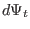

The safety factor given by Eq. (29) is expressed in terms of the
components of the magnetic field. The safety factor can also be expressed in
terms of the magnetic flux. Define as the poloidal magnetic flux
enclosed by two neighboring closed magnetic surface, then can be
written
where is perpendicular to the first magnetic surface (so perpendicular
to the
 ) and its length is equal to the length from the point on
this magnetic surface to the point on the neighbour magnetic surface. Using
Eq. (30), the poloidal magnetic field is written as
) and its length is equal to the length from the point on
this magnetic surface to the point on the neighbour magnetic surface. Using
Eq. (30), the poloidal magnetic field is written as
Substituting Eq. (31) into Eq. (29), we obtain
We know is a constant independent of the poloidal location, so can be taken outside the integration to give
On the other hand, the toroidal magnetic flux enclosed by the two magnetic
surfaces, , is given by
Using this, Eq. (33) is written as
Equation (35) indicates that the safety factor of a magnetic surface
is equal to the differential of the toroidal magnetic flux with respect to the
poloidal magnetic flux enclosed by the magnetic surface.
yj
2018-03-09